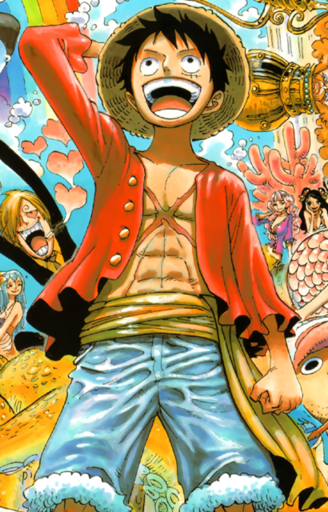
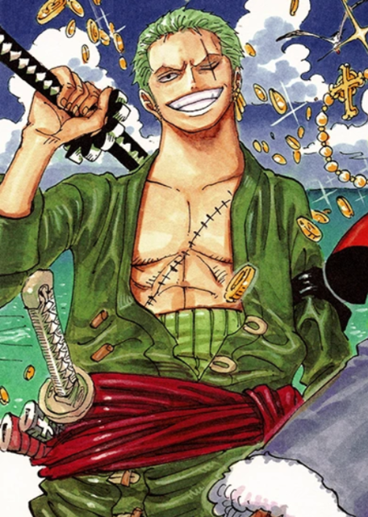
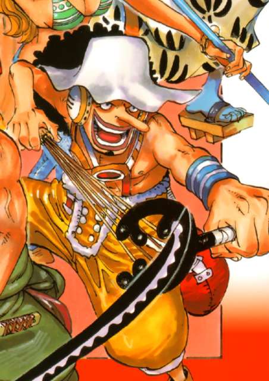
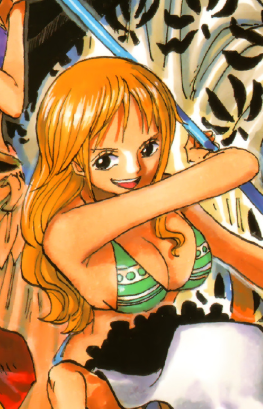
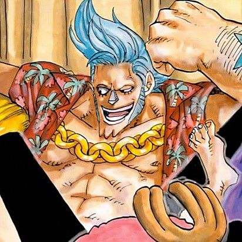
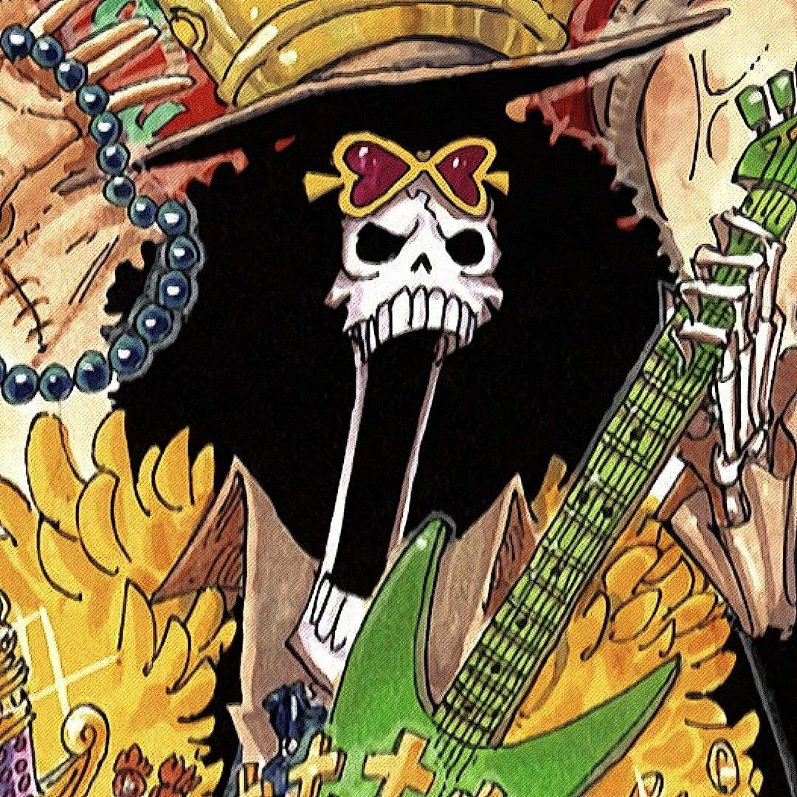
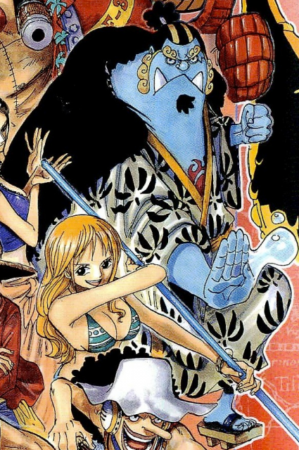

Straw Hat Pirates
| Characters | Description |
|---|---|
|  |
Monkey D. LuffyMonkey D. Luffy is the protagonist in One Piece and captain of the increasingly infamous and powerful Straw Hat Pirates. He ate the Gum-Gum Devil Fruit that changed his body to rubber. His dream is to find the legendary One Piece and become Pirate King. He has made quite a name for himself around the world and has a bounty on his head to match - 3,000,000,000 Berries. Despite his naive attitude, he is an amazing leader who the Straw Hats follow with pride. |
|  |
Roronoa ZoroRoronoa Zoro is the swordsman, first member and Vice Captain of the Straw Hat Pirates. He uses the Santoryu-style (Three Sword Style) of sword combat and aims to become the world's greatest swordsman. He has a bounty of 1,111,000,000 berries and is one of the eleven supernova rookies of the 'Worst Generation' of pirates. |
|  |
UsoppUsopp is the sniper of the Straw Hat Pirates who is famous for frequently lying. He wants to be a great warrior of the sea. His currently has a bounty of 500,000,000 beri. |
|  |
NamiNami is the navigator of the Straw Hat Pirates and a skilled cartographer. She's a lover of money and mikans who dreams of making a map of the world. She currently has a bounty of 366,000,000 beri. |

|
Vinsmoke SanjiSanji Vinsmoke is the cook of the Straw Hat Pirates and lover of all things women. His dream is to find the All Blue of the sea. His bounty is currently 1,032,000,000 beri. |

|
Nico RobinNico Robin is the archaeologist of the Straw Hat Pirates, who has the powers of the Bloom-Bloom Devil Fruit. Once an officer of the evil Baroque Works Organization, Robin left them and joined the Straw Hats. She currently has a bounty 930,000,000 beri. |

|
Tony Tony ChopperTony Tony Chopper is the doctor of the Straw Hat Pirates. He was a normal reindeer until he ate the Human-Human Fruit, which allows him to talk and transform. His bounty is currently 1,000 beri. |
|  |
FrankyFranky is the shipwright of the Straw Hat Pirates and a self-made cyborg. He built the Thousand Sunny. He is a former disciple of Tom, a fishman shipwright who built the Oro Jackson (Gol D. Roger's ship) using the wood of the Treasure Tree Adam. His real name is Cutty Flam. His bounty is currently 394,000,000 beri. |
|  |
Brook"Soul King" Brook is a member of the Straw Hat Pirates, serving as their musician. He is a Devil Fruit user who ate the Yomi Yomo no Mi (Revive-Revive Fruit), and is undead, having died and return to life in a pseudo-immortal state because of the fruit. His bounty is currently 383,000,000 beri. |
|  |
JimbeiJimbei is a whale shark fish-man, who was once a member of the Seven Warlords. He is the helmsman of the Straw Hat Pirates. He was the second captain of the Sun Pirates after Fisher Tiger. His bounty is currently 1,100,000,000 beri. |